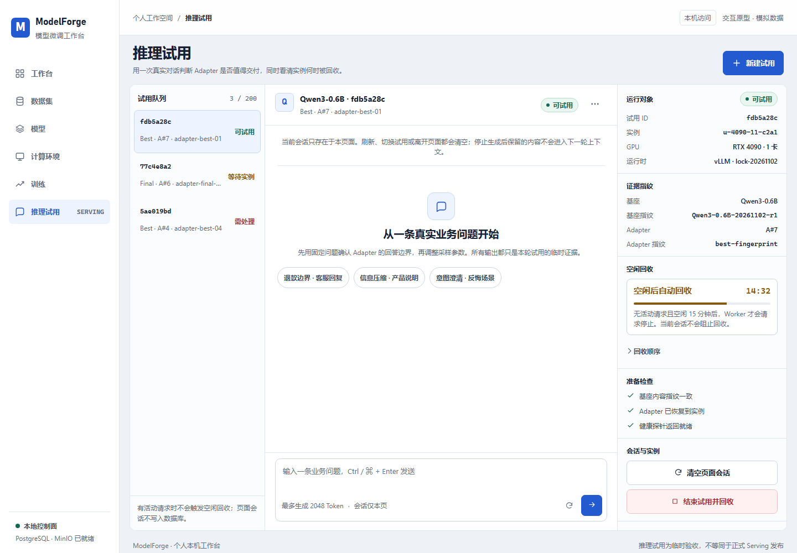
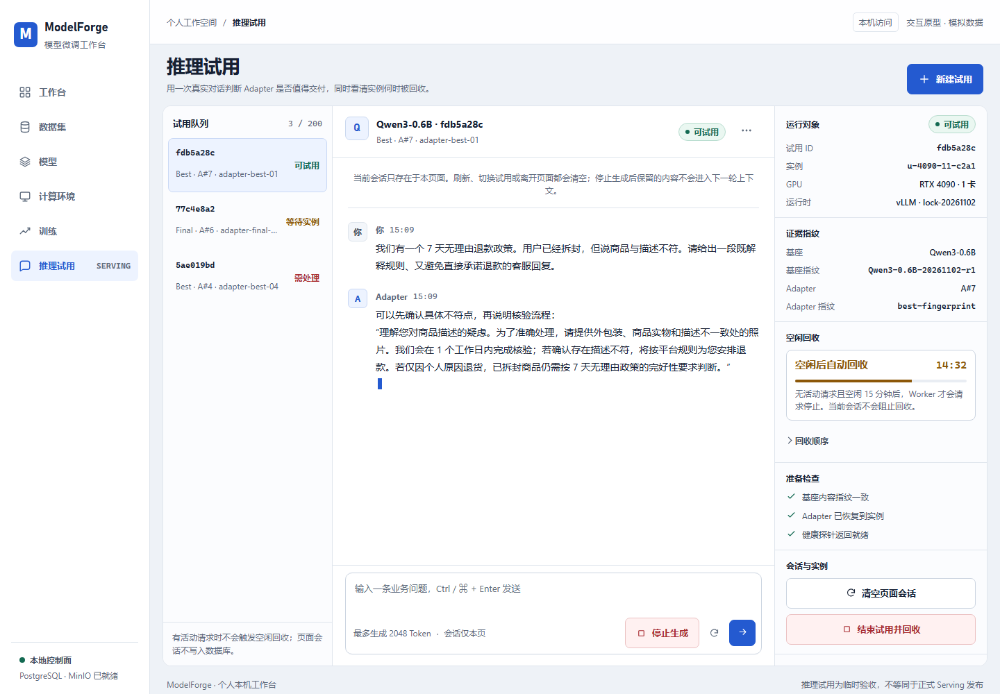
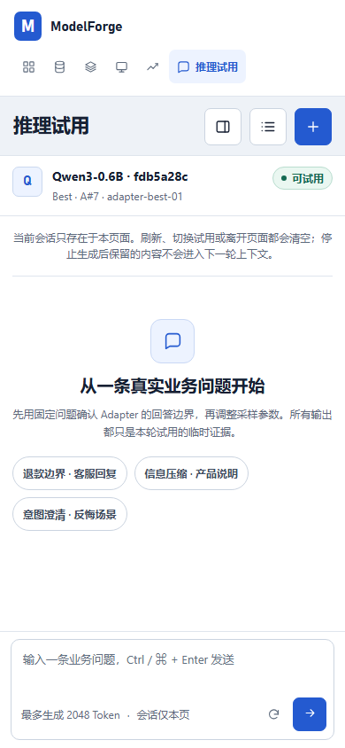

F1
F1 · 试用工作台 Recommended / merged
左队列、中会话、右运行事实。新建试用降为右侧抽屉；等待实例、准备、失败、回收中、已结束都替换同一工作区，而不是继续向下追加面板。保留现有冷白 + 钴蓝产品壳层，并把 F2 的验收意识与 F3 的状态回执收敛进右侧检查器。



为什么推荐它落地
最贴合现有路由和后端合同：单活跃 Trial、手动实例、页内会话都不需要改服务。首屏从资源表单变成当前试用，移动端把历史和运行详情收到抽屉。
核心流程
选择 Trial → 读状态 → 固定问题对话 → 停止生成 → 确认结束 → 看进程/实例/租约回收回执。
代价
视觉差异度低于 F2/F3，需要靠对象指纹、回收计时和门禁检查器避免沦为普通聊天工具。
首屏任务效率5 / 5
现有系统迁移成本低–中
移动端稳定性5 / 5
Serving 专注度5 / 5